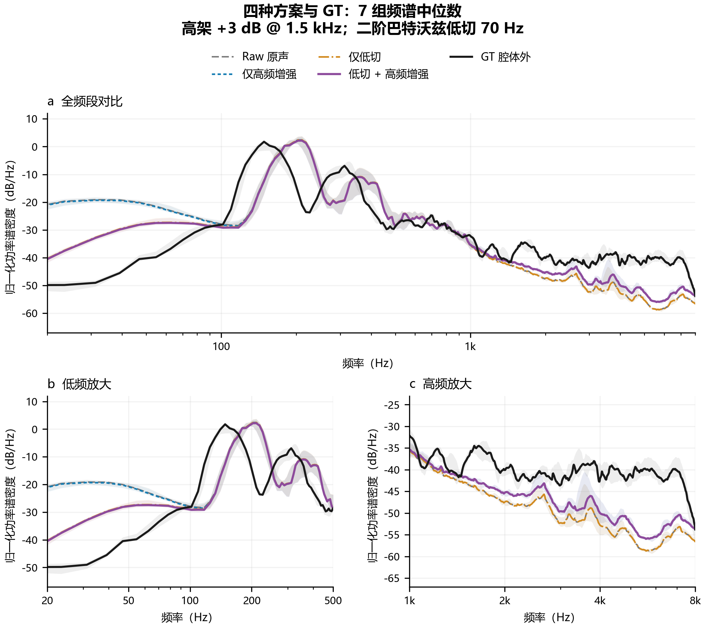
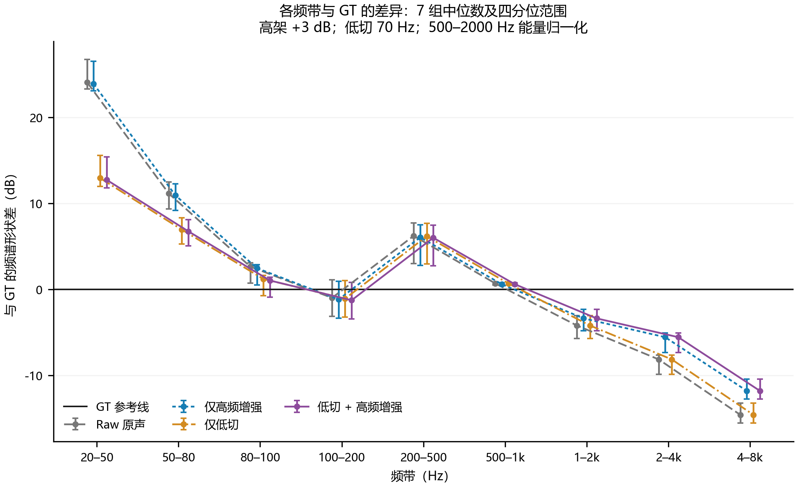
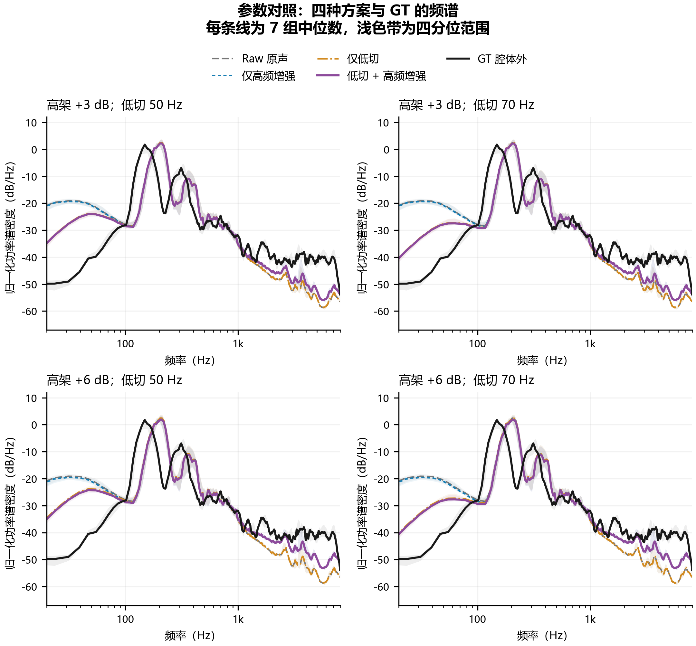
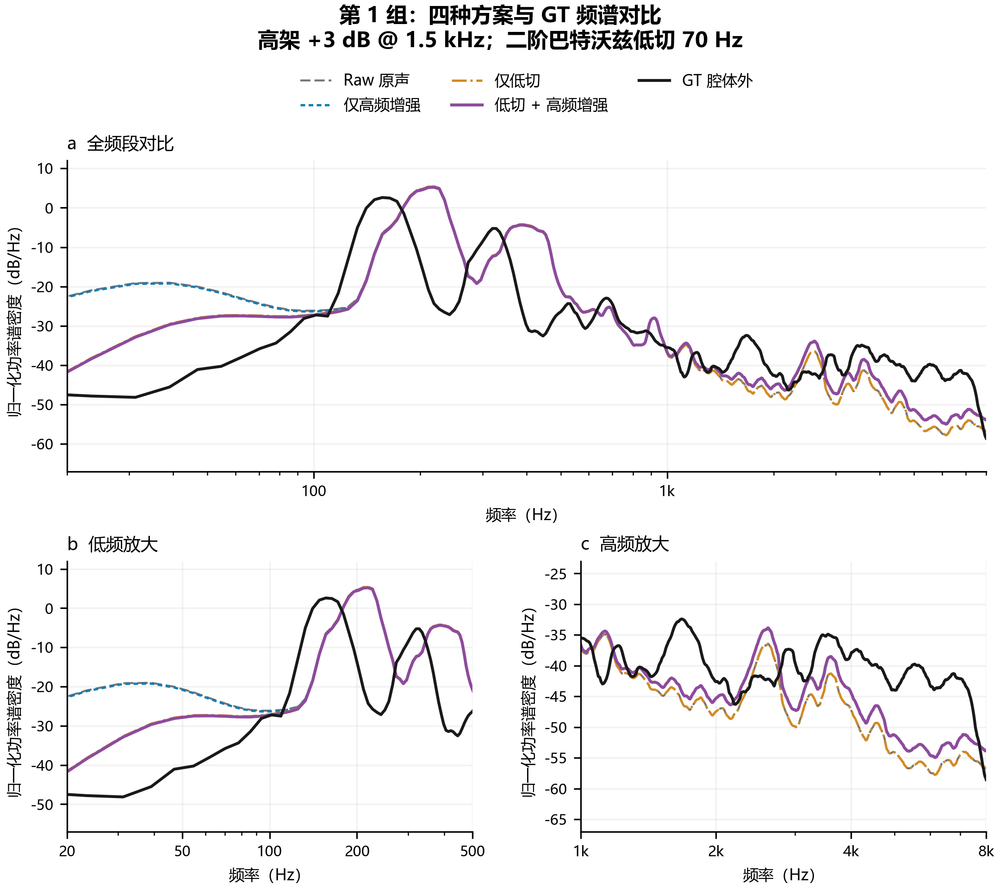
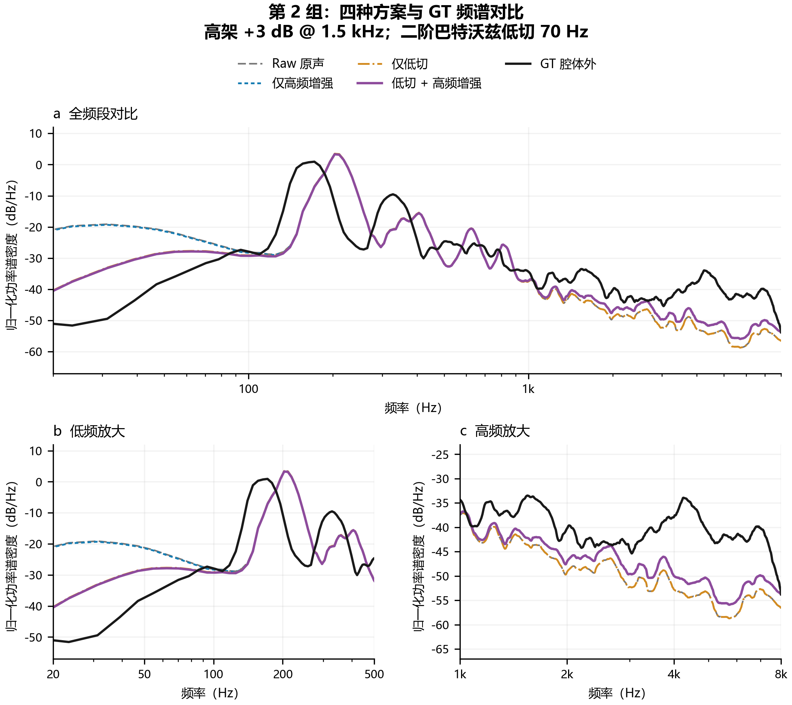
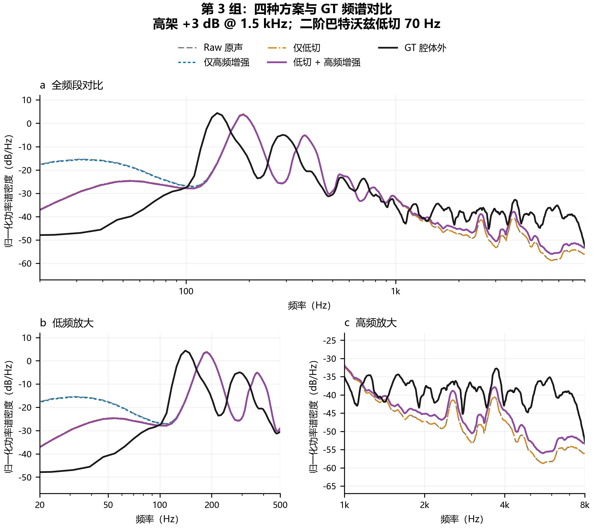
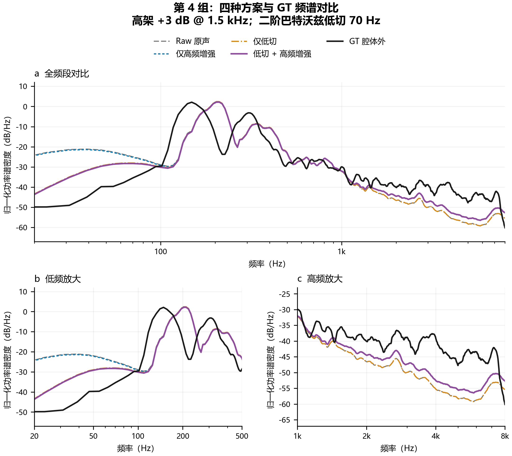
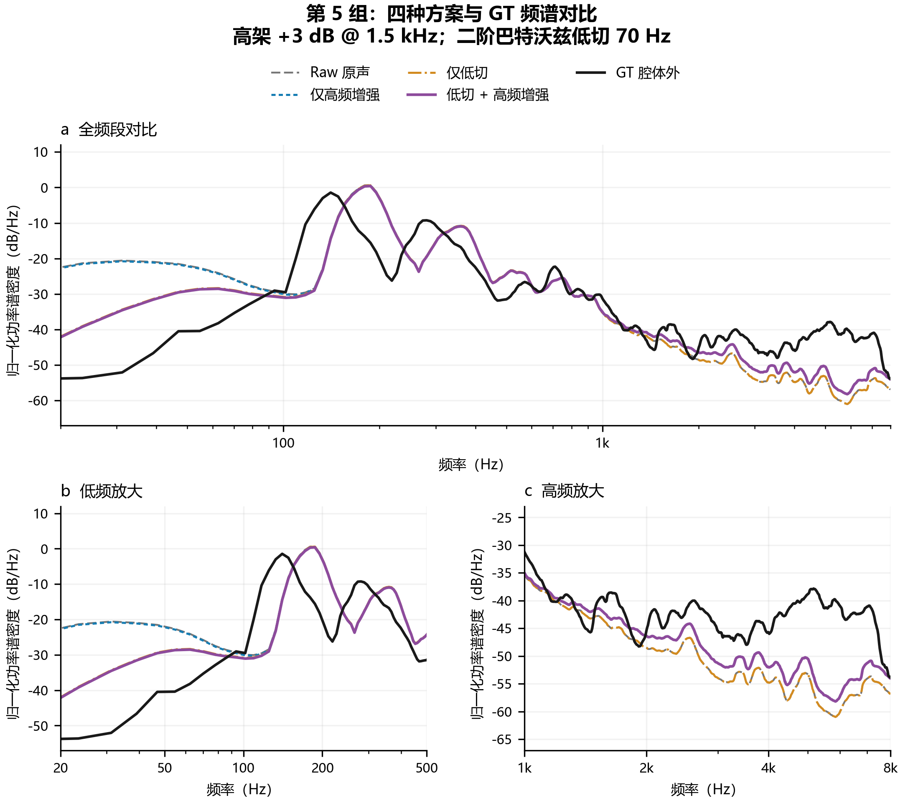
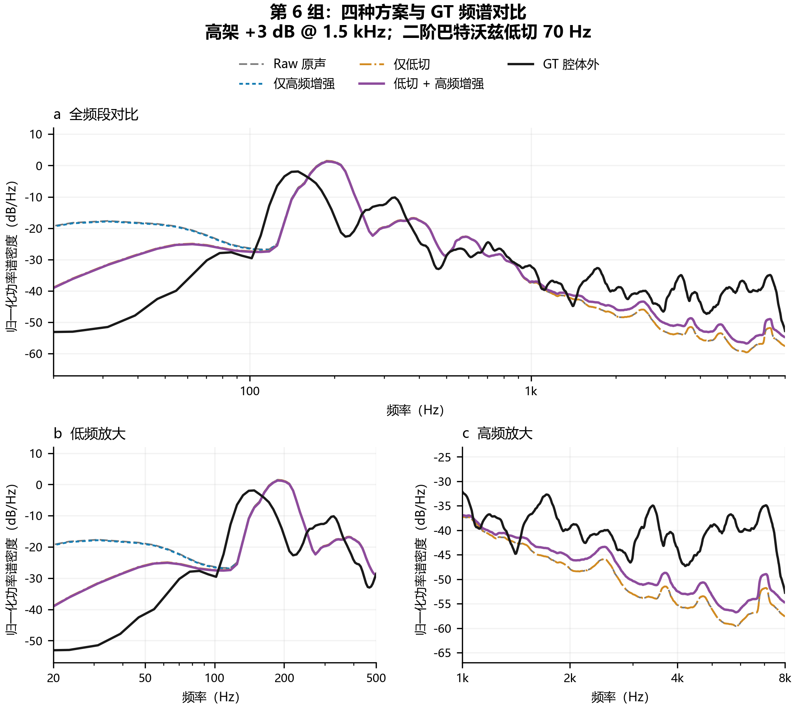
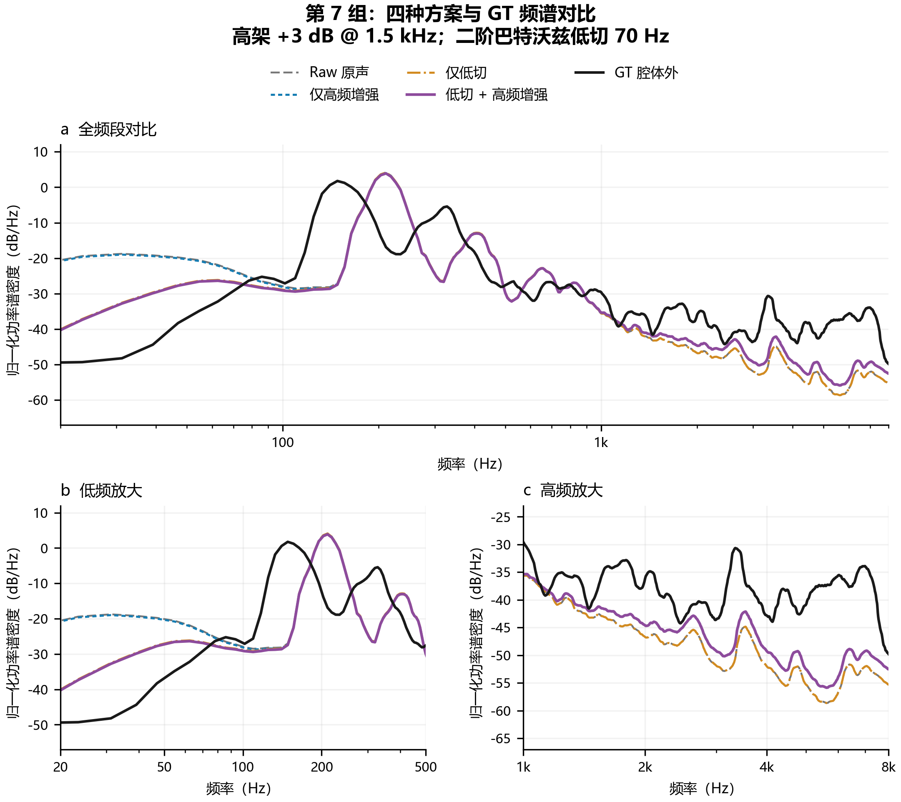

四种方案与GT频谱对比
Raw / 仅高频增强 / 仅低切 / 低切加高频增强 / GT
主图：高架 +3 dB @ 1.5 kHz，二阶巴特沃兹低切70 Hz；统一按500–2000 Hz能量归一化。
分析与读图说明
四种方案与 GT 频谱对比
主图参数：仅高频增强为1.5 kHz高架+3 dB；仅低切为二阶Butterworth高通70 Hz；组合版同时包含这两项。raw使用原始腔体内WAV，GT使用对应编号腔体外M4A。
7组全部纳入，按编号比较相同说话人、相同文本的分开录音，没有做时域对齐。
为比较音色，将每段Welch功率谱的500~2000 Hz能量归一化；这能去除前面试听音频不同恒定增益和设备录制音量差的影响，但不能消除麦克风、AGC、编码及两次发声差异。
图中“归一化功率谱密度”反映频谱形状，不是声压级，不是绝对增益。与GT的差异不能当作腔体的精确传递函数。
频谱估计：16 kHz共同采样率、2048点Hann窗、512点步长、逐帧去均值、全段Welch平均。只在绘图时使用1/12倍频程线性功率平均平滑，所有曲线同样处理，原始未平滑数据保留在CSV中。
总体曲线为7组录音等权中位数，浅色带为四分位范围，不是置信区间。单组图直接展示该组频谱，不跨组平均。部分曲线重叠是预期结果：低切对中高频几乎不变，高架对低频几乎不变。
figures/01_summary_spectra.png：主对比图，含全频段、低频放大、高频放大。
figures/pair_01_spectra.png ~ pair_07_spectra.png：7组分别对比。
figures/02_band_difference_vs_gt.png：4种方案相对GT的频带形状差，使用未平滑频谱积分。
figures/03_parameter_comparison.png：+3/+6 dB高架、50/70 Hz低切的四种参数配置对照。
每张图均提供PNG、PDF、SVG。数值源数据见spectra_all_parameters.csv、band_difference_vs_gt.csv；输入文件与哈希见source_manifest.csv。
仅新增对比图、数据与说明；未修改原始录音、既有试听文件或代码。

四种方案与GT：总体对比（点击打开PDF）
相对GT的频带差异（点击打开PDF）
全部参数配置（点击打开PDF）
第1组对比（点击打开PDF）
第2组对比（点击打开PDF）
第3组对比（点击打开PDF）
第4组对比（点击打开PDF）
第5组对比（点击打开PDF）
第6组对比（点击打开PDF）
第7组对比（点击打开PDF）